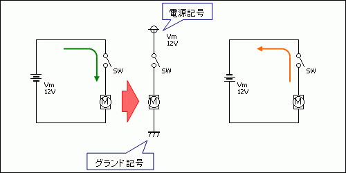
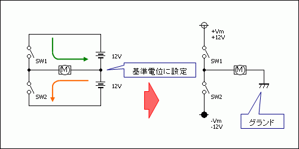
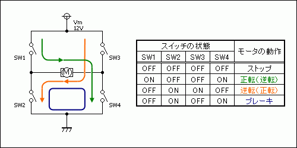
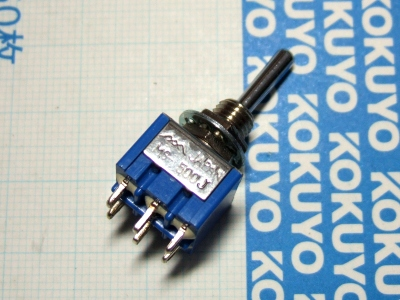
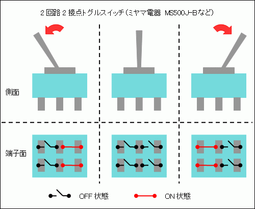
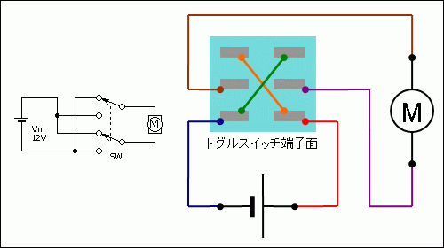

モータドライバ
モータドライバとは，モータの制御回路のことです． ここでは，模型用の小型モータをマイコンで制御することを最終目標とし，モータドライバの基礎から応用までを掲載します．
DCモータの動作
一般にミニ四駆などの玩具に組み込まれ，「DCモータ」と呼ばれているタイプは， 専門的には「整流子電動機」の中でも「永久磁石界磁方式」というカテゴリに分類されます． 詳しくはWikipediaなどを参照してください．
DCモータには「ストップ」，｢正転｣，「逆転」，「ブレーキ」と呼ばれる4つの基本動作があります． ご存知のとおり，DCモータは電流方向を変えることで回転方向が変わります． 「ストップ」とはモータに電流が流れていない状態，回転していない状態のことです． 「ブレーキ｣とは，モータの両端子を短絡させ，回転中のモータ自身の逆起電力を使ってモータの回転にブレーキをかける動作のことです． モータの逆起電力については，後ほど簡単に説明します．
また，「正転」及び「逆転」を，「CW（ClockWise，時計回り）」及び「CCW（Counter ClockWise，反時計回り）」と表現することも多いです．
最も簡単なモータドライバ
初歩的な考え方ですが，「ブレーキ」以外の動作であれば電源の極性を入れ替えるだけで実現できます． 直流電源の記号ではなく，電源とグランドの記号で表現することが多いので併記しておきます．
グランドは基準電位のことで，基本的には電源の0V端子に接続します． 電源が1つで電池の場合はマイナス極がグランドとなりますが，電源が複数ある場合や，正電源と負電源が共存する場合は注意してください．
Tブリッジ回路
電源を2つ用意することで，回転方向を変えることができる回路です． T字状に結線している特徴から，「Tブリッジ回路」と呼ばれているようです． スイッチを切り替えることでモータに流れる電流の方向が変わるのがわかるでしょうか．
この回路の禁止操作は，2つのスイッチを同時に閉じてしまうことです． 短絡してしまうので大変危険です．実際のところ，電源が2つ必要なTブリッジ回路が使われることはありません．
Hブリッジ回路（フルブリッジ回路）
これまで紹介してきたモータドライバの中で，最も実用されている回路です． 前述した4つの基本動作が，単一の電源で全て実現できる回路です． H字状に結線している特徴から，「Hブリッジ回路」と呼ばれています．
また，SW1とSW3のように電源と負荷（モータ）の間にあり，負荷に流れる電流を制御するスイッチを「ハイサイドスイッチ」， SW2とSW4のように負荷（モータ）とグランドの間にあり，負荷に流れる電流を制御するスイッチを「ローサイドスイッチ」と呼びます．
トグルスイッチでモータ制御
 スイッチでモータを制御する方法として，上図のような2回路2接点タイプのトグルスイッチを使った方法がよく知られています． トグルスイッチ（スナップスイッチ）とは，レバー操作によって接点を切り替えるスイッチのことです． トグルスイッチには様々なタイプがありますが，1回のレバー操作によって，2箇所のON-OFF操作が可能な 「2回路2接点タイプ」は，「2極双投タイプ」や「6端子タイプ」とも呼ばれています． 「2回路2接点タイプ」も，中立点がないタイプや，レバーから手を離しても操作状態を保持するオルタネイト（自己保持）タイプ， レバーから手を離すと自動的に中立点に復帰するモーメンタリ（自動復帰）タイプに分類されます． 使用用途を考慮して選定してください．
実際に2回路2接点タイプのトグルスイッチで回路を組むと，上図のようになります． 中立点のあるタイプを用いれば，DCモータの基本動作のうち「ストップ」，「正転」，「逆転」の3つが実現可能です． スイッチ1つだけで，かなり実用的な回路が組めることがわかります．